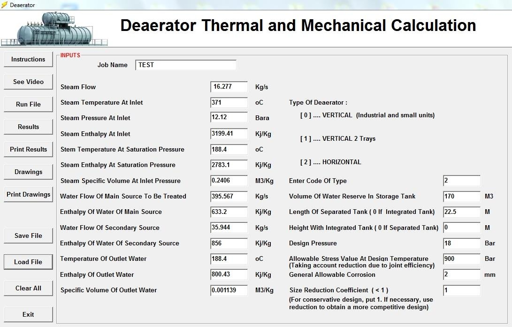
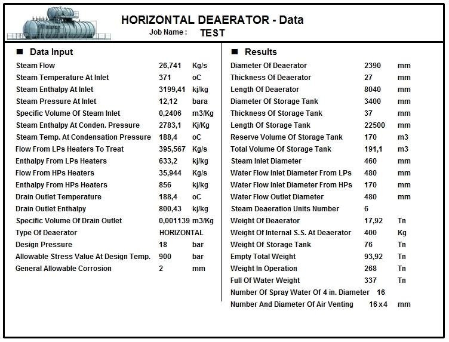
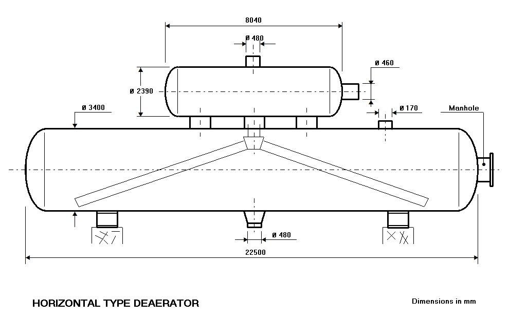
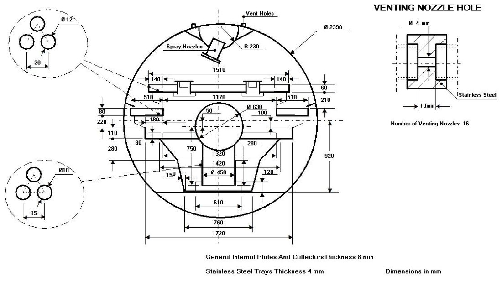
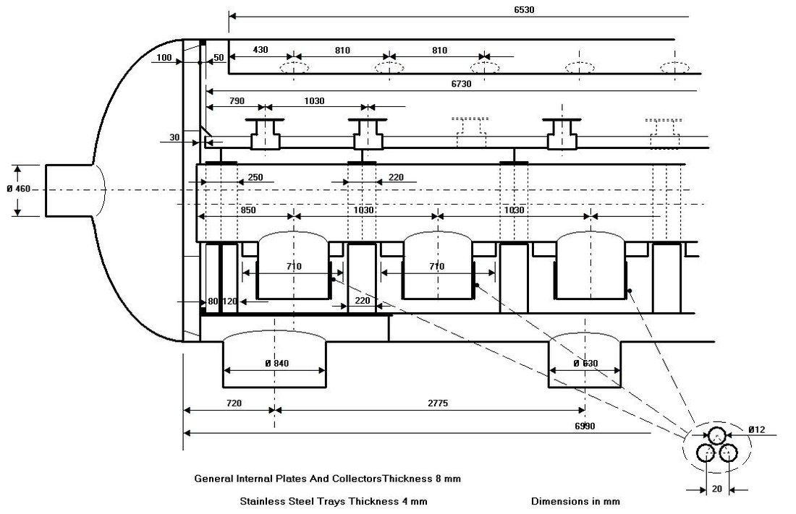
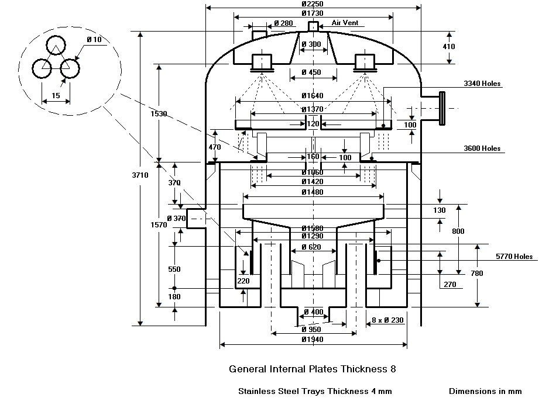
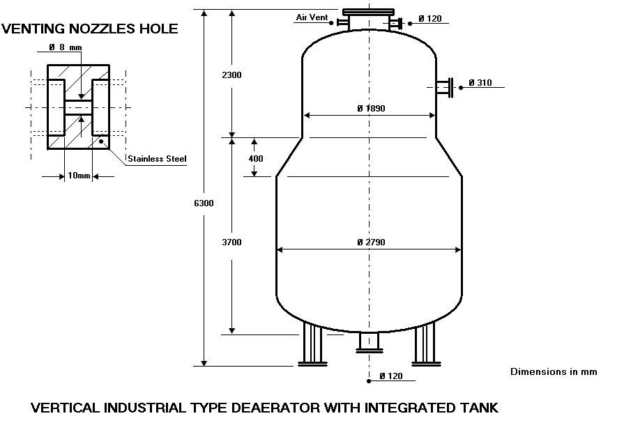
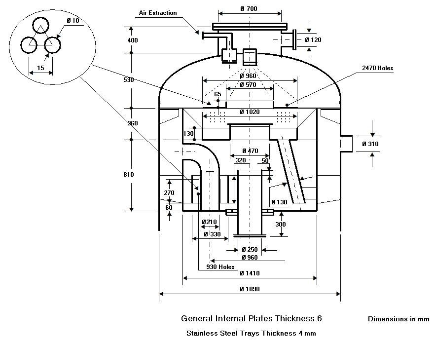

Deaerator Design Software
Thermal and mechanical design and sizing of horizontal and vertical deaerators for industry and thermal or nuclear power plants.
Thermal and mechanical deaerator design
This program performs the thermal and mechanical design and sizing of deaerators. It is valid for small industrial units, medium vertical units and the larger horizontal units used in industry and in thermal or nuclear power plants. From the steam and water conditions, it sizes the deaerator and its storage tank, gives the nozzle diameters, internals and weights, and generates the dimensional and sectional drawings of the unit.
Three deaerator types
- Vertical – industrial and small units, with integrated storage tank.
- Vertical with two trays – medium-size units.
- Horizontal – large power plant units, with a separate horizontal storage tank.
Data entry
The input window collects the heating steam conditions (flow, inlet temperature, pressure and enthalpy, saturation temperature and enthalpy, specific volume), the water flows to be treated – main source and secondary source with their enthalpies – and the outlet water conditions. For the mechanical design, the user enters the type of deaerator, the water reserve volume of the storage tank, the tank length (separate tank) or height (integrated tank), design pressure, allowable stress, corrosion allowance and an optional size reduction coefficient for a more competitive design.

Results
The results sheet gives the diameter, thickness and length of the deaerator and of the storage tank, reserve and total tank volume, steam inlet, water inlet and water outlet nozzle diameters, number of steam deaeration units, number of spray water nozzles and air venting holes, and the weights: deaerator, stainless steel internals, storage tank, empty total, in operation and full of water.

Dimensional drawing
For horizontal units, the program draws the deaerator mounted on its storage tank with the main dimensions and nozzle diameters.

Sectional drawings of the internals
Sectional drawings show the internal arrangement with its dimensions: spray nozzles, stainless steel trays and their perforations, collectors, vent holes and the detail of the venting nozzles, together with the thickness of internal plates and trays.



Vertical industrial deaerator with integrated tank
For small and industrial applications, the program designs vertical deaerators with an integrated storage tank and draws both the general arrangement and the internals.


Documentation
See the complete example with every input and results window in the program documentation:
Deaerator – full documentation (PDF)Related programs
- Steam Surface Condenser – thermal and mechanical design of steam surface condensers per HEI
- Feedwater Heater – design of LP and HP feedwater heaters per HEI
- In-line Feedwater Heaters Performance – performance of a complete battery of feedwater heaters
Condensers, feedwater heaters, deaerators, district heating, natural gas heaters and more, with a description of each program on the home page.
See all programs →